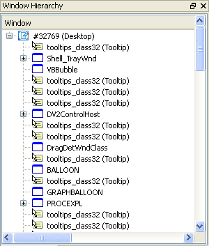

Alle venster in het systeem worden getoont in de twee boomoverzichten in het hoofdvenster van Window Detective. Deze bomen zijn een hierarchie van ouder en kind vensters. De eerste boom is een lijst van alle top-level vensters, dat wil zeggen, alle kindvensters van de desktop. De tweede boom toont de vensters op proceseigenaar. De kinderen van deze vensters zijn nodes van hun ouder item, die dezelfde is voor beide boomstructuren.
|

De desktop venster boom |
De proces venster boom |
Elke boomstructuur heeft een aantal kolommen die venster eigenschappen toont zoals handle (HWND), tekst en afmetingen.
Rechts klikken op een item opent een menu met acties voor dat venster. Deze zijn:
| Eigenschappen Bekijken | Opent een eigenschappenvenster van dat Venster |
| Eigenschappen Wijzigens | Opent een dialoog om de eigenschappen van dat venster te wijzigen |
| Berichten | Opent een venster met alle log berichten die verstuurd zijn naar dat venster. |
| Alles Uitvouwen | Vouwt alle kinder items van het geselecteerde item recursies uit. |
| Bewerk Venster Stijlen | Opent het "Bewerk Eigenschappen" dialoog van de venster stijlen tab. |
| Knipper | Toont een rand om het venster. De rand stijl kan aangepast worden in de voorkeuren. |
| Tonen | Toont het venster. Er gebeurt niets als het venster al zichtbaar is. |
| Verbergen | Verbergt het venster. Er gebeurt niets als het venster al verborgen is. |
| Sluiten | Sluit het venster. De eigenaarstoepassing kan anders reageren, zoals de gebruiker vragen om bevestiging, alvorens het venster te verwijderen. |